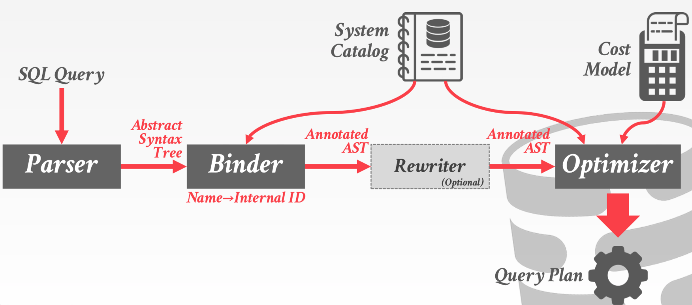
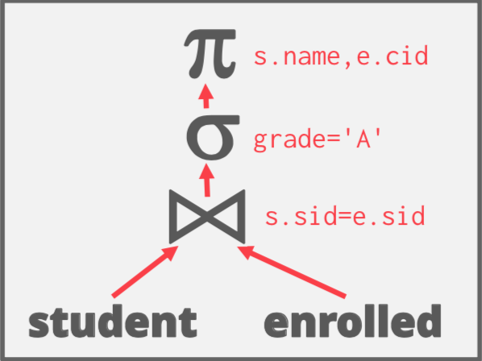
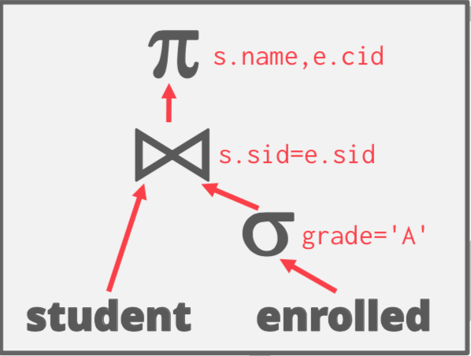
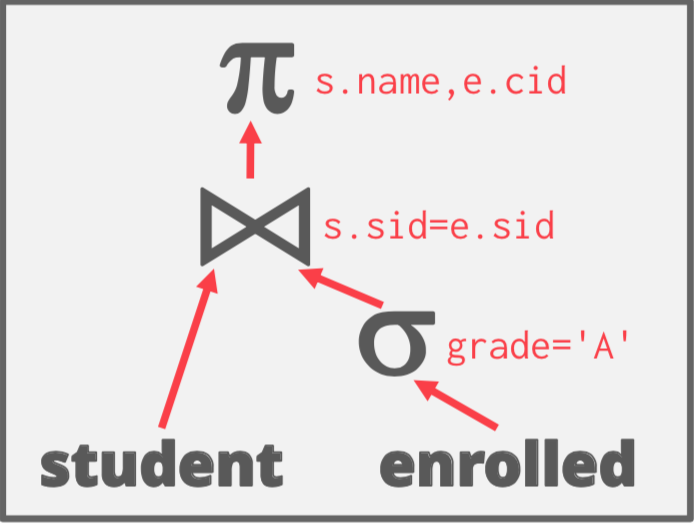
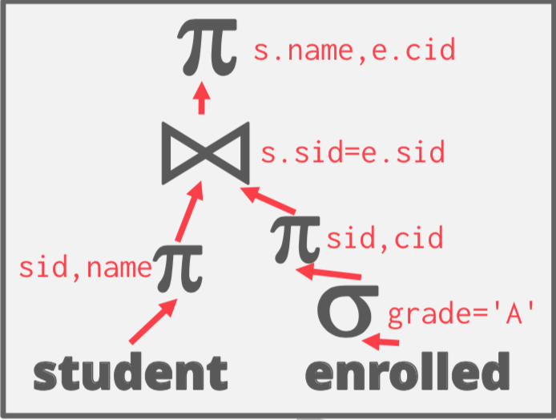

查询优化
SQL 是申明式的。用户只告诉 DBMS 他们想要的答案，但是不会告诉 DBMS 如何获得结果。
不同的执行计划可能性能有很大的差异。
IBM SYSTEM R 第一个实现了一个查询优化器。
人们认为 DBMS 永远不会选择比人类可以写的更好的查询计划。
很多 System R 的概念的优化器今天仍然在使用。
查询优化
- 启发式
重写查询移除无效的/低效的部分
不需要代价模型
- 基于代价的搜索
使用代价模型来评估多个等价计划选择一个代价最低的计划
查询计划概览

等价关系代数
如果两个关系代数表达式是生成相同的元组集合，则两个表达式是等价的。
DBMS可以在没有代价模型的情况下识别更好的查询计划。
通常将这种方式称之为查询重写。
谓词下推
SELECT s.name, e.cid FROM student AS s, enrolled AS e WHERE s.sid = e.sid AND e.grade = 'A'
| 优化前 | 优化后 |
|---|---|
|  |  |
\pi_{name,cid}(\sigma_{grade='A'}(student \bowtie enrolled)) = \pi_{name,cid}(student \bowtie(\sigma_{grade='A'} (enrolled))
关系代数等价
选择：
-
尽可能早地执行过滤
-
重写排序谓词，以便DBMS首先应用最具选择性的谓词
-
打破复杂的谓词，然后下推
\sigma_{p_1\wedge p_2 \wedge ... p_3}(R) = \sigma_{p_1}(\sigma_{p_2}(...\sigma_{p_n}(R)))
- 简化复杂的谓词
(X=Y AND Y=3) \rightarrow X=3 AND Y=3
投影：
- 尽早执行投影操作，将元组列减少，减少中间结果
- 投影除请求或者要求之外的所有属性（例如，JOIN 键）
投影下推
SELECT s.name, e.cid FROM student AS s, enrolled AS e WHERE s.sid = e.sid AND e.grade = 'A'
| 优化前 | 优化后 |
|---|---|
|  |  |
更多示例
不可能、不必要的谓词
SELECT * FROM A WHERE 1 = 0; SELECT * FROM A WHERE 1 = 1; SELECT A1.* FROM A AS A1 JOIN A AS A2 ON A1.id = A2.id; SELECT * FROM A; SELECT * FROM A AS A1 WHERE EXISTS(SELECT * FROM A AS A2 WHERE A1.id = A2.id); SELECT * FROM A; SELECT * FROM A WHERE val BETWEEN 1 AND 100 OR val BETWEEN 50 AND 150; SELECT * FROM A WHERE val BETWEEN 1 AND 150;
JOIN
-
交换律 R\bowtie S = S \bowtie R
-
结合律 (R\bowtie S) \bowtie T = R \bowtie (S \bowtie T)
对于 n 路连接，有多少种不同的连接顺序呢？
卡塔兰数 \approx 4^n
进行全部枚举会非常慢。
稍后我们会看到优化器如何限制搜索空间。
代价估计
一个查询需要多长时间？
- CPU：代价很小；很难估计
- Disk：块传输的数量
- 内存：内存使用数量
- 网络：消息的数量
多少元组会被读、写？
需要什么统计信息？
统计
DBMS 在内部的系统表中保存关于表、属性、索引的内部统计信息。
不同系统会在不同时间更新它们。
手动调用：
- Postgres/SQLite: ANALYZE
- Oracle/MySQL: ANALYZE TABLE
- SQL Server: UPDATE STATISTICS
- DB2: RUNSTATS
对于没个关系 R，DBMS 维护下面的信息：
- N_R: R 的元组数量
- V(A,R): 属性 A 不同的值的数量